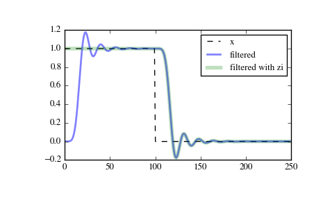

scipy.signal.sosfilt_zi¶
- scipy.signal.sosfilt_zi(sos)[source]¶
Compute an initial state zi for the sosfilt function that corresponds to the steady state of the step response.
A typical use of this function is to set the initial state so that the output of the filter starts at the same value as the first element of the signal to be filtered.
Parameters: sos : array_like
Array of second-order filter coefficients, must have shape (n_sections, 6). See sosfilt for the SOS filter format specification.
Returns: zi : ndarray
Initial conditions suitable for use with sosfilt, shape (n_sections, 2).
Notes
New in version 0.16.0.
Examples
Filter a rectangular pulse that begins at time 0, with and without the use of the zi argument of scipy.signal.sosfilt.
>>> from scipy import signal >>> import matplotlib.pyplot as plt
>>> sos = signal.butter(9, 0.125, output='sos') >>> zi = signal.sosfilt_zi(sos) >>> x = (np.arange(250) < 100).astype(int) >>> f1 = signal.sosfilt(sos, x) >>> f2, zo = signal.sosfilt(sos, x, zi=zi)
>>> plt.plot(x, 'k--', label='x') >>> plt.plot(f1, 'b', alpha=0.5, linewidth=2, label='filtered') >>> plt.plot(f2, 'g', alpha=0.25, linewidth=4, label='filtered with zi') >>> plt.legend(loc='best') >>> plt.show()
